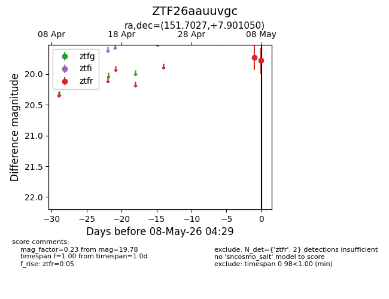
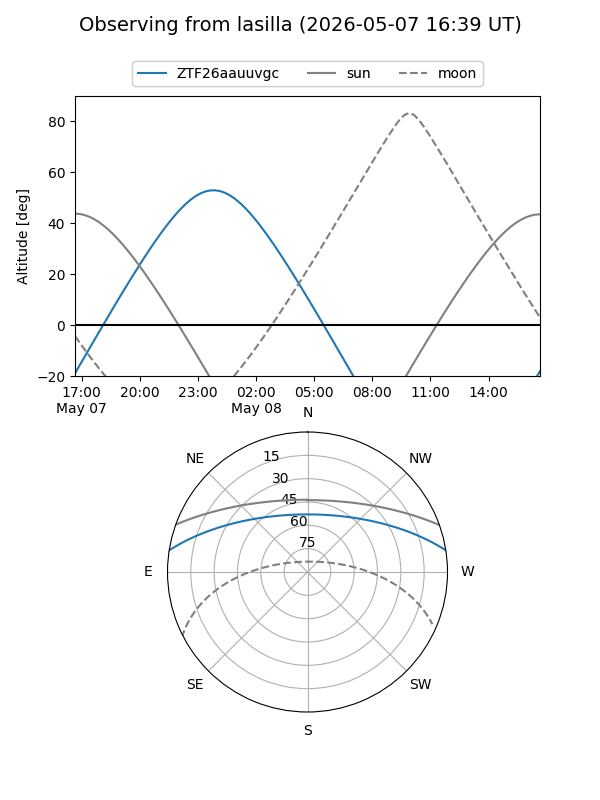
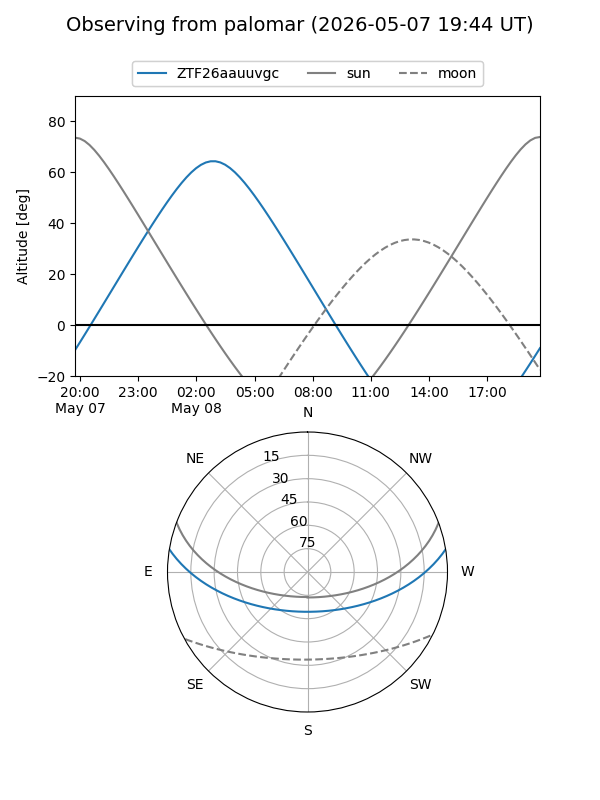
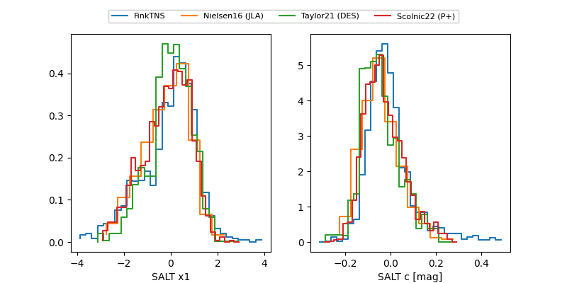

ZTF26aauuvgc
Target ZTF26aauuvgc at 2026-05-08 04:31
Aliases and brokers:
FINK: link
Lasair: link
ALeRCE: link
alt names
ZTF26aauuvgc (ztf,fink_ztf)
Coordinates:
equatorial (ra, dec) = 151.7027,+7.90105
equatorial (HMS+DMS) = 10:06:48.64,+07:54:03.78
galactic (l, b) = (231.4005,+46.58559)
Flags:
Photometry:
last ztfr=19.78
2 ztfr detections
Lightcurve

Visibility


Additional plots
